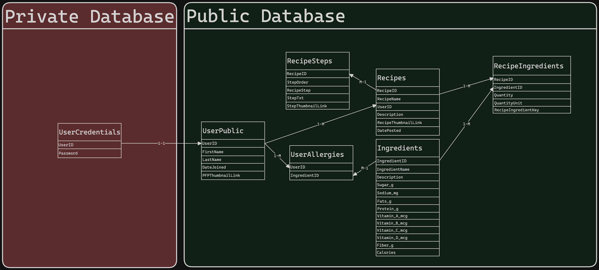
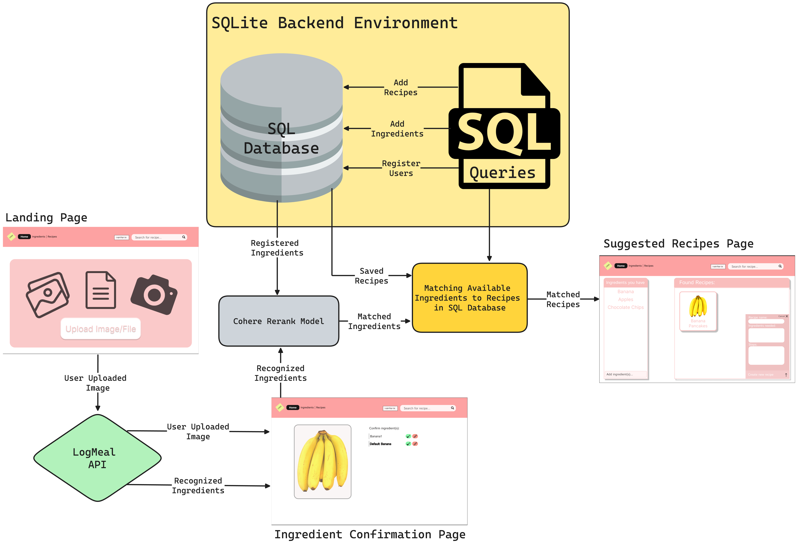
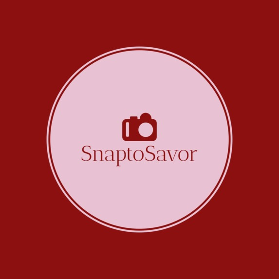
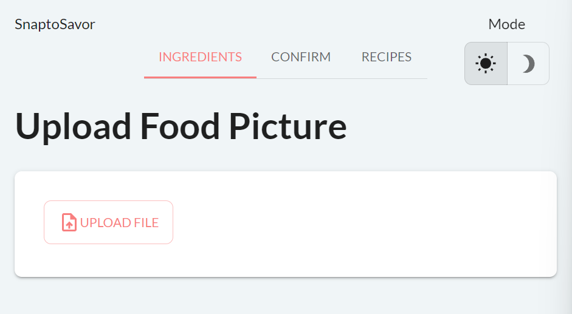
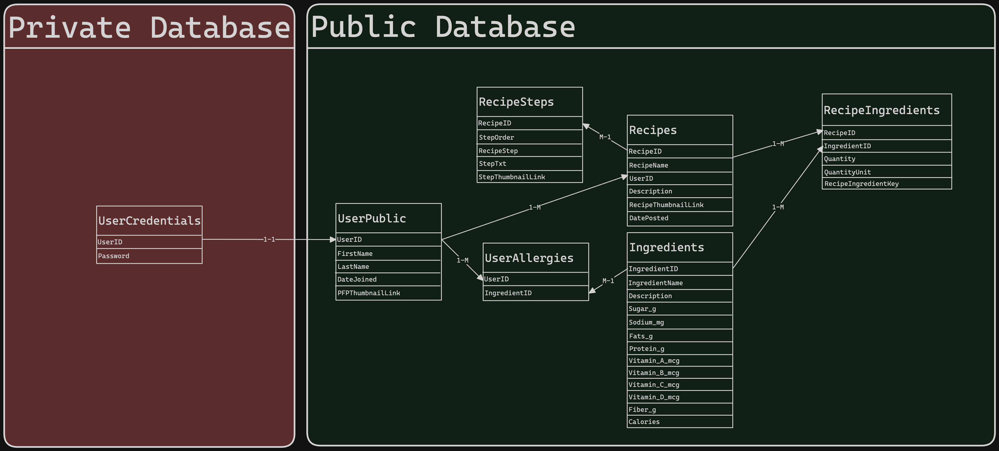
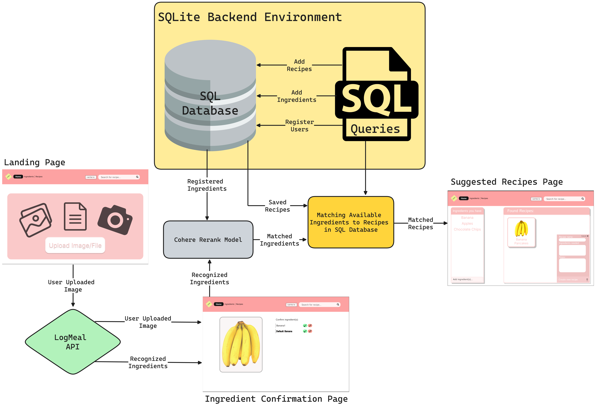
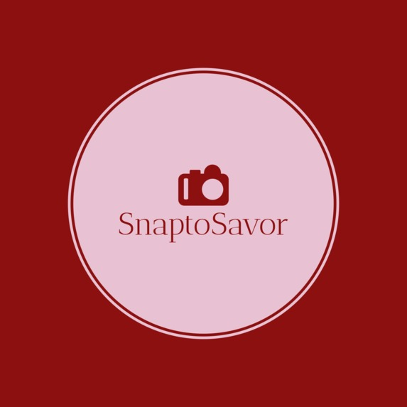
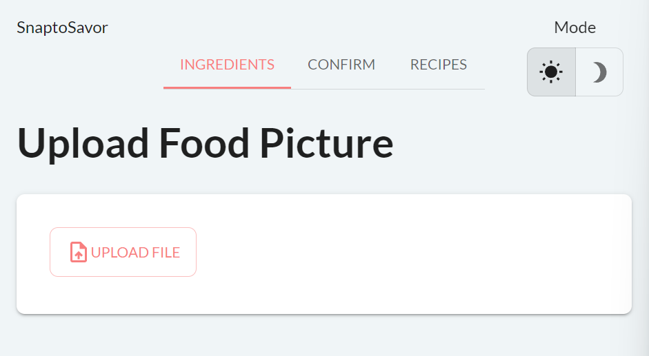

A combination of my university accomplishments, personal endeavors, and collaborative projects that reflect my passion for programming.
SnapToSavor *In Progress*
An AI-powered ingredient-to-recipe maker
Sick and tired of watching leftover ingredients go bad? SnaptoSavor is our AI-Powered Recipe System designed for you! SnaptoSavor allows hungry but clueless users to upload an image of their ingredients, and provides recipes based on the ingredients available...
Have you ever been stuck in that endless cycle of eating the same meals over and over again but aren't sure how to expand your grocery list? Sick and tired of watching leftover ingredients go bad? SnaptoSavor is our AI-Powered Recipe System designed for you!
This idea holds special nostalgic significance to our two senior teammates, Katrina and Bob. In their first ever hackathon back in 2019, they designed SeasoningShack, a similar website that searches recipes in an effort to save food waste and promote sustainability.
In addition, as both Bob and Katrina are set to graduate this year, this serves as a way for them to directly visualize how much they have grown during their 5 years and University of Toronto compared to their young first year selves and all utilize the skills they picked up along the way to truly redefine the vision they had 4 years ago. This time, we upgraded the idea with AI-powered image recognition so that users could simply take a picture of their fridge to identify ingredients, and then get recipes. In addition, SnaptoSavor is fitted with a backend SQLite Database to efficiently store recipes and ingredients to allow for more efficient querying.
Our other teammates, Snow and Marilyn, are first years learning the ropes to carry on this legacy. Our hope is that they will grow just as much if not more than Kat and Bob in their journey through university.
SnaptoSavor allows hungry but clueless users to upload an image of their ingredients, and provides recipes based on the ingredients available. It recognizes all the ingredients in the picture and compares it against an extensive database of recipes in order to provide users with a large variety of options for them to try and stretch their eating habits with.
SnaptoSavor is fundamentally built using the Taipy Python library. It powers their frontend UI and connects various API calls.
On the backend, a from-scratch SQLite Database deals with the bulk storage, transformation, and configuring of large amounts of recipes with custom made functions made to allow the database to be easily called from the frontend.
As we were working with Taipy for the first time, it was initially challenging to wrap our heads around the Taipy's concepts of "state" and syntax format. Moreover, working with certain APIs, like LogMeal, was challenging to connect with the front-end components due to all the tricky call-backs and syntax required by Taipy.
We managed to generate a functional website incorporating Taipy, an open source Python Library we'd never encountered before. In addition, we were able to use an AI-powered API to detect the ingredients from an images, and link the output data to our recipes page.
On the backend, this was the first time we'd been able to fully build a database schema by schema from the ground up using SQLite as opposed to using an existing database like MongoDB or Amazon Firebase.
For all 4 members of our team, this was not only our first experience with Taipy but also with web design and development in Python. We also placed heavier significance on making a visually pleasing and user friendly webpage making us put more effort into balancing functionality and looks.
SnaptoSavor has significant room to grow in it's current state. There are some planned features that did not end up making it into the final product and some stretch goals that could be achieved with enough time and development.
First and foremost, we planned on adding OAuth so that users can login and save their favourite recipes, and even auto-save the recipes and ingredients lists to their Google Calendars to ease meal-planning!
The addition of users as a category allows us to filter by things like food preferences and/or allergies to better refine our queries.
Among the various unused SQLite Database schema and architecture, there are columns in place to store information on the recipe steps to potentially provide users with recipes in friendly and digestible forms. There is also more functionality and data clarity available for ingredients with the ability to hopefully store nutritional information and allow SnaptoSavor to help people track their dietary fitness goals.
With a team of 3, we created multiple resources tailored for the homeless. To start, we listed numerous free courses
on career development to help people begin their careers, no matter their beginnings. For example, learning how to
communicate professionally or drive can be invaluable, and clicking into a course provides a more detailed breakdown.
Next, we created a specialized Google Map that provides locations specific to homeless people’s needs. This includes
a tailored filter system to include info like shelter capacities and daycare services. Although these include established
organizations, our news and events page is a unique way of alerting homeless people to local pop-up events.
Lastly, the QuestFund page is similar to GoFundMe, but on a smaller scale. It allows the homeless to request commonly
needed items or ask for new ones, and the community will donate either money or specific items. The quest can then be
closed, and homeless people can purchase the items at partnered grocery stores through a verified QR code.
As Vice President of AMACSS, I was the head organizer managing all aspects of this event. Within one month and with the help of the AMACSS team, I successfully executed a 150+ attendee event featuring speakers, awards, prizes, photobooths, dinner, and more. I delegated tasks to the marketing team, events director, the executive team, and first years team while working with them to optimize efficiency. I oversaw and managed teams and their efforts while ensuring the highest quality.
The purpose of the CMS Gala event is to issue awards and nominations provided by clubs and professors to chosen students. It is an annual event that recognizes and celebrates the achievements of students, faculty, and staff in the fields of computer science, mathematics, and statistics. This prestigious event is an opportunity to acknowledge the hard work and dedication of those who have excelled in their respective areas of study and research.
The awards recognize outstanding students who have demonstrated exceptional participation and studentship, including and extending to those who have demonstrated exceptional academic performance, made significant contributions to their field of study, and shown exceptional promise for the future.
The evening is filled with inspiration and excitement as the nominated students are announced and awarded for their achievements. It is a time for the department to come together to celebrate the successes of its members and to recognize the importance of the fields of computer science, mathematics, and statistics.
In addition to the award ceremony, the event also includes keynote speeches from leading experts in the field, as well as opportunities for networking and socializing. Whether you are a student, faculty member, or industry professional, the CMS Gala Night is an event not to be missed.
Tools:
Canva, Social Media Marketing (Discord, Instagram, Facebook, etc), Google Forms/Docs/Excel
Significant knowledge gaps between the general population and virtual reality (VR) still exist, despite the growing popularity of VR headsets in leisure and professional settings.
To help close these gaps, my project tackles the creation of new products exclusively within a virtual environment that benefits the general technology-growing community.
A survey conducted prior to this project revealed that a significant number of Apple and Android users expressed a desire for device holders.
Initially, an electronics organizer and a universal holder were important competitors to consider, and both of these ideas eventually lead to the end decision.
Coupled with my exploratory interests for VR development in a professional setting alongside 3D design, I chose to create a phone holder; a useful tool in students' everyday life for diverse functionality and a project that resonates with my personal fascination.
To design a 3D printable phone holder, an optimal artistic space was created through the use of an Oculus Quest 2, a VR headset, combined with the software Gravity Sketch.
Reference photos found in my research were used as inspiration during the initial development stages and later had features from all of them combined into the finished design.
Further down the production process, two prototypes are planned to be printed from a resin 3D printer and a filament 3D printer in order to determine the best overall finished product.
Tools:
Oculus Quest 2, Gravity Sketch, Resin and Filament Printers
Skills:
Independence, Problem-Solving, Self-Motivation, Presentation, 3D Printing
PetSprout is a mobile application that aims to help users build and maintain sustainable and healthy habits through empirically researched behavioural techniques and gamification.
HabiPets was the original title of this project and is the combination of the words Habits and Pets as the name suggests. Similar to that of a Tamagotchi, each user will have a pet that will evolve and lose life points depending on the consistency of daily habits. Users will also have the ability to evolve and customize their companion.
Other features of interest are tutorials, and methods commonly used in goal setting techniques, while implementing operant conditioning principles by having the pet react positively or negatively depending on the user's activity.
This project has achieved the recognition and guidance of the University of Toronto’s Psychology Professor: Steve Joordens.
Collaborated with 6 students and created a shopping application and user-friendly interface for store owners and customers to post/purchase products and review orders.
Helping Hearts was founded by 4 students who wanted to combat the negativity the
pandemic has brought upon society by offering a social platform to communicate
their thoughts on. It helps with not only miscommunication but bringing people
together when they most need it in a welcoming community for all! The feature is
designed to be added to chatting apps, to allow users to show their emotional
state as a badge next to their chatting avatar, letting their friends know whether
they are emotionally available to text or do they need some space today, with a
bonus feature when you select the badge asking for support; the app sends you a
word of encouragement in case you don’t receive any from your friends!
Languages:
Javascript, HTML, CSS
Tools:
Qoom
Skills:
Teamwork, Problem-Solving
Category:
Web Development, UI/UX Design
Seasoning Shack
A website to help you find recipes based on your ingredients in your home
Was awarded the Cheapr Eats API Prize.
Collaborated with a hard-working team of 5 and designed a functional website.
Attentive to detail shown through the implementation of secure sign-up and login verification page
Distracted driving is one of the most common causes of car accidents but it is not the only reason why so many are getting severely hurt or dying.
Pedestrians are distracted all the time by the constant pressures of electronics of all types, increasing the chances of them not paying attention to the road.
This limits their reaction times and their ability to think on their feet as they cross roads.
Save yourself from harm by taking care around roads and being mindful of the dangers that are always present.


 






